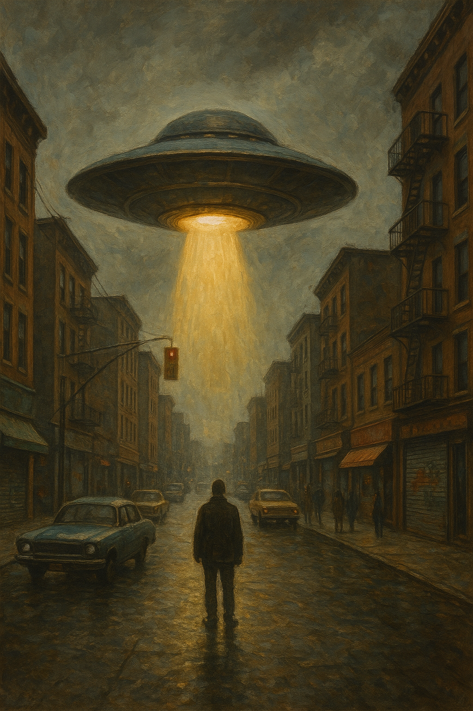

UFO a Bronxban – A város fölött lebegő titokzatos fények
Az éjszakai égbolton a Bronx felett hirtelen megjelent egy ismeretlen eredetű, ragyogó fényforrás, amely pillanatok alatt felkeltette a helyiek figyelmét. Többen is jelentették, hogy furcsa, kör alakú objektum lebegett csendesen a házak fölött, és mozgása egyáltalán nem hasonlított semmilyen ismert repülőeszközére.
UFO a Bronxban – A város fölött lebegő titokzatos fények
Az éjszakai égbolton a Bronx felett hirtelen megjelent egy ismeretlen eredetű, ragyogó fényforrás, amely pillanatok alatt felkeltette a helyiek figyelmét. Többen is jelentették, hogy furcsa, kör alakú objektum lebegett csendesen a házak fölött, és mozgása egyáltalán nem hasonlított semmilyen ismert repülőeszközére.
...Az UFO-t a környék lakói izgatottan és egyben kissé aggódva figyelték, miközben a város fényei alatt lassan táncolt az égen. Néhányan azt mondták, hogy a különös jármű olyan gyorsan eltűnt, ahogy megjelent, mintha csak egy pillanatig akart volna megmutatkozni.
A helyi rendőrség és az ufó-kutatók is kivonultak a helyszínre, de a titokzatos repülő tárgy már nyomtalanul eltűnt. Vajon valóban földönkívüliek látogatták meg a Bronxot, vagy csak egy újabb magyarázat nélküli városi legenda született?
Az biztos, hogy az éjszaka csendjét egy különleges, megmagyarázhatatlan esemény törte meg a Bronxban, amelyet még sokáig emlegetni fognak.